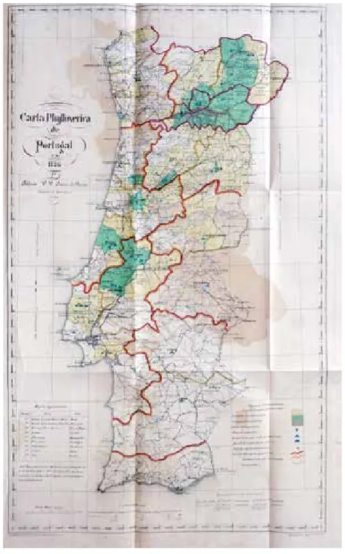
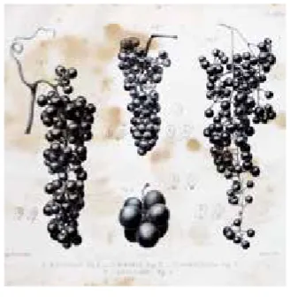
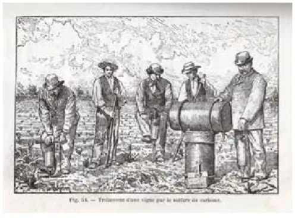

Kapitel 1 · Kurzer Überblick über die Geschichte des Weinbaus in Portugal
Die amerikanischen Plagen und die Erholung des Weinbaus
Nordamerika und Asien sind die Heimat von Wildarten, die sich weniger zur Weinbereitung eignen, früher aber als Tafeltrauben von Interesse waren. Mit der Einfuhr von Rebmaterial aus den Vereinigten Staaten nach Europa im 19. Jahrhundert kamen unbemerkt auch Schaderreger für die europäischen Reben herüber:
• 1851 wurde in Portugal der Echte Mehltau (Uncinula necator) festgestellt,


• in den 1880er-Jahren das Schadinsekt Reblaus (Daktulosphaira vitifoliae), gefolgt
• vom Falschen Mehltau (Plasmopara viticola).
(Quelle: J. Böhm, Atlas das Castas da Península Ibérica, S. 69–77).
Während man das Insekt bekämpfte, indem man reblausresistentes amerikanisches Rebmaterial als Unterlage verwendete, wird der Pilz bis heute mit übermäßigem chemischem Pflanzenschutz kontrolliert, in manchen Regionen mit mehr als zehn Behandlungen im Jahr – mit ökologischen und agronomischen Folgen. Die Weltbevölkerung hat sich in weniger als einem Jahrhundert vervierfacht (Quelle: Population growth over the years/Our World in Data), mit schädlichen Auswirkungen auf das Klima. Man erkannte, dass die professionellen landwirtschaftlichen Verfahren den natürlichen Ökosystemen und der Artenvielfalt von Fauna und Flora enorm schadeten.
Die ersten Reaktionen auf die schweren Schäden durch den Befall mit amerikanischen Krankheitserregern in ganz Europa waren wenig erfolgreich.
Die Bekämpfung der Reblaus mit Direktträger-Hybriden gelang zwar, doch die Weine dieser amerikanischen Sorten waren kaum trinkbar. Die agronomischen Versuche, die Weinberge zu überfluten oder den Boden mit Schwefelkohlenstoff zu behandeln, waren nicht nachhaltig. Die Technik der Pfropfung war seit der Römerzeit bekannt und von Cato, Vergil, Plinius und Columella beschrieben worden (F. Shut 1885: 179); mit reblausresistenten amerikanischen Sorten als Unterlagen führte sie zum Erfolg.
Schwieriger war der Pflanzenschutz bei den kryptogamen Pilzerregern. Amerikanische Rebsorten oder Hybriden dieser Sorten halfen zwar gegen den Pilzbefall, doch ihre Trauben ließen sich nicht zu wohlschmeckendem Wein verarbeiten. Der Most dieser Sorten hatte Eigenschaften, die nicht der typischen europäischen Rebsorte entsprachen. Vor allem der Fox-Ton der amerikanischen Hybriden war für den genussvollen Konsum ungeeignet. Nach der Wende zum 20. Jahrhundert ging die Weinerzeugung in Portugal drastisch zurück.

Französische Züchter begannen, durch Rückkreuzung amerikanischer mit europäischen Reben neue pilzresistente Sorten zu schaffen. Ihre Qualität war zwar trinkbar, reichte aber bei Weitem nicht an die Qualität der alten Sorten heran. Das führte Mitte des 20. Jahrhunderts schließlich zum Verbot der interspezifischen Sorten in ganz Europa. Der genetische Anteil an Nicht-Vinifera-Blut war bei diesen Sorten schlicht zu groß. Da man nun wusste, dass Schwefel gegen den Echten Mehltau half und Kupfersulfat auch gegen den Falschen Mehltau eingesetzt werden konnte, gab es einen Weg, wieder europäische Reben zu pflanzen.
Die portugiesische Weinwirtschaft erholte sich rasch und erzeugte in einigen Regionen sogar Überschüsse: von ursprünglich 7 Millionen hl stieg die Produktion schließlich auf 14 Millionen (Boletim do Banco Ultramarino 1966: 33). Eine wesentliche Maßnahme war der Aufbau des Genossenschaftswesens, um dem kleinen Traubenerzeuger einen fairen Absatzweg zu sichern. Der Versuch, den Markt durch staatliche Eingriffe zu regulieren, führte zum Bau enormer Lagerkapazitäten durch die Junta Nacional do Vinho und zur bezahlten Destillation der Weinmengen, die die Nachfrage überstiegen. Dieses System funktionierte mit gewissem Erfolg, solange der portugiesische Staat seine Einfuhrgrenzen gut kontrollierte. Nach dem politischen Wechsel zu offenen Märkten in den 1970er-Jahren brach das alte System zusammen.
Ab der zweiten Hälfte des 19. Jahrhunderts hatte die Rebenverbesserung durch Kreuzung in Europa Tradition, besonders in Frankreich mit interspezifischer Züchtung und in den östlichen Ländern vom Kaukasus bis zum Balkan. In Deutschland war in den 1930er- und 1940er-Jahren mit der Ideologie der genetischen Überlegenheit bevorzugter Individuen „nationalen Blutes“ die Kreuzungszüchtung sogar offizielle Strategie und wurde nach dem Zweiten Weltkrieg auf technisch-wissenschaftlicher Ebene fortgeführt. Heute gibt es in vielen Ländern durch Kreuzung gewonnene Sorten: In Deutschland sind die weiße Sorte „Müller-Thurgau“ (1882, Geisenheim) und die rote Sorte „Dornfelder“ (1955, Weinsberg) heute in ihrer jeweiligen Kategorie die zweithäufigst angebauten Rebsorten des Landes. Frankreich wiederum kam mit der Sorte „Alicante Bouschet“ (1855) und in jüngerer Zeit mit „Marselan“ (Paul Truel, 1961) voran, ganz zu schweigen von der interspezifischen Hybridisierung des letzten Jahrhunderts. Selbst in Portugal gab es am Instituto Superior de Agronomia ein groß angelegtes Programm zur Gewinnung neuer Sorten durch Kreuzung. Die Tafeltraube „Dona Maria“ und die Keltertraube „Serra Nova“ zeugen noch heute von dieser Kreuzungszüchtung. Ein halbes Jahrhundert lang war die portugiesische Weinerzeugung durch besondere gesellschaftspolitische Umstände vor Wettbewerb geschützt.